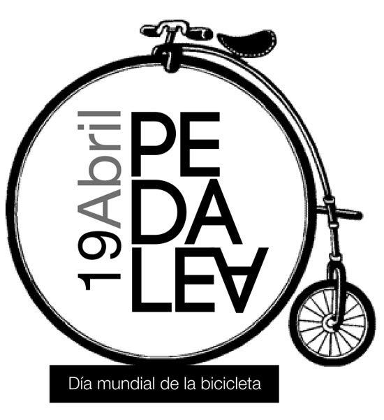
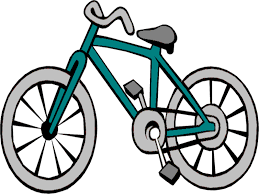

DÍA MUNDIAL DE LA BICICLETA
Banner conmemorativo:
Esta es el banner conmemorativo:

Esta es el banner conmemorativo:
Lo que sí está claro es que la bicicleta es el resultado de la evolución de un juguete, en concreto del Célérifère.Como indica su nombre este juguete nació en Francia y en concreto en París el 1791 en plena revolución francesa de la mano del conde Mede de Sivrac. La idea genial de Sivrac fue colocar las dos ruedas en tandem en lugar de una lado de otro como se venía haciendo desde antiguo.Permaneció inalterado por 20 años antes de que alguien le colocase un artilugio para cambiar de dirección
En la actualidad, prácticamente cualquier bicicleta es más sofisticada, cómoda y fácil de montar que una bicicleta de hace 20 años. Por ejemplo, la mayoría incluyen palancas para cambios de velocidad –algunas hasta 30– que mejoran la relación entre el esfuerzo de pedaleo y la velocidad de avance
Como un medio de transporte ágil, sustentable y limpio, su uso le ha brindado a la ciudad y a sus habitantes nuevas maneras de construir una cotidianeidad incluyente, respetuosa y divertida con una atmósfera de modernidad que llegó con su creación hace 200 años.
Pueden usarse en caminos de terracería, brechas escarpadas y pendientes rocosas, pero no deben utilizarse para distancias largas o paseos de alta velocidad. Hoy día las bicicletas de montaña representan las dos terceras partes del mercado.
Son máquinas que transfieren toda tu potencia a la carretera y llevan lo que necesites para mantenerte rodando.No deben utilizarse en caminos deterracería o rocosos.
Las bicicletas de ruta o de carreras son bicicletas diseñadas para la velocidad. Sus características están pensadas para llevarte tan lejos y tan rápido como tus piernas lo permitan.
Una bicicleta eléctrica es un tipo de vehículo eléctrico consistente en una bicicleta a la que se le ha acoplado un motor eléctrico para ayudar en el avance de la misma.
Pueden usarse para distancias limitadas, caminos pavimentados o de terracería dispareja. No deben utilizarse para distancias largas o paseos de alta velocidad ya que son pesadas y se manejan en una posición poco aerodinámica.
Fue creada en 1931 por Giacinto Benotto, junto con su hermano Cesare desarrollaron numerosos adelantos técnicos, que permitieron posicionar a Benotto como una de las marcas más reconocidas a nivel mundial.
Empresa mexicana con más de 17 años de experiencia en el desarrollo, fabricación y comercialización de bicicletas, hechas con dedicación y pasión.
Establece sus oficinas en celaya,guanajuato y distribuye algunas otras marcas relacionadas con el ciclismo,sus bicletas son famosas por ser ligeras, muy resistentes y casi no se oxidan.
Ofrece el mejor producto para recreación, transportación y competición ,ademas de un buen servicio
Marca radicada en jalisco,que vende bicletas infantiles ,ademas de sus famosas bicletas rodada 26
 1
1